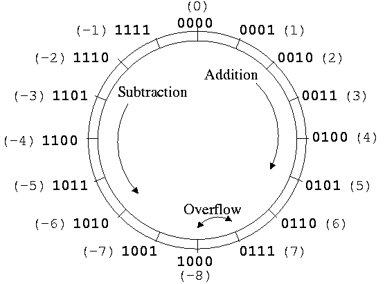
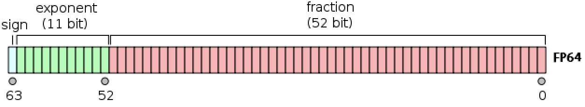
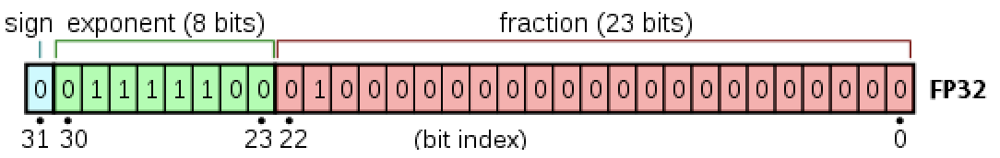
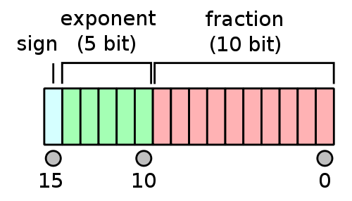
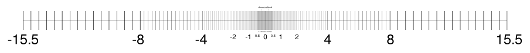
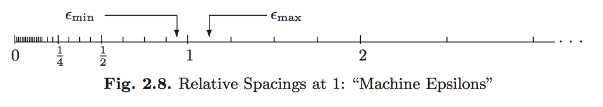

Computer Arithmetic
Units of Computer Storage
- bit = binary + digit (coined by statistician John Tukey).
- byte = \(8\) bits.
- KB = kilobyte = \(10^{3}\) bytes.
- MB = megabytes = \(10^{6}\) bytes.
- GB = gigabytes = \(10^{9}\) bytes. Typical RAM size.
- TB = terabytes = \(10^{12}\) bytes. Typical hard drive size. Size of NYSE each trading session.
- PB = petabytes = \(10^{15}\) bytes.
- EB = exabytes = \(10^{18}\) bytes. Size of all healthcare data in 2011 is ~150 EB.
- ZB = zetabytes = \(10^{21}\) bytes.
Difference between KB and KiB: 1 KB = 1000 bytes but 1 KiB = 1024 bytes.
Difference between TB and TiB: 1 TB = 1000 GB but 1 TiB = 1024 GB.
The Base.summarysize() function can be used to display the size of objects in terms of memory.
Integers: Fixed-Point System
- Fixed-point number system is a computer model for integers \(\mathbb{Z}\).
- The number of bits and method of representing negative numbers vary from system to system.
- The
integertype in R has 32 or 64 bits, determined by machine word size. - Matlab has
(u)int8,(u)int16,(u)int32,(u)int64.
- The
- Julia has even more integer types:
- Storage for a
SignedorUnsignedinteger can be \(M = 8, 16, 32, 64\) or \(128\) bits.
- Storage for a
Signed Integers
- First bit indicates sign.
0for nonnegative numbers1for negative numbers
- Two’s complement representation for negative numbers.
- Sign bit is set to
1. - Remaining bits are set to opposite values
1is added to the result- Two’s complement representation of a negative integer
xis same as the unsigned integer2^64 + x.
- Sign bit is set to
Two’s complement representation respects modular arithmetic. Adding any two signed integers is just bitwise addition, possibly module \(2^{M}\).

Arithmetic (addition, substraction, multiplication) on integers is exact except for the possiblity of overflow and underflow.
The range of representable integers by an \(M\)-bit signed integer is \([-2^{M-1}, 2^{M-1}-1]\).
typemin(T)andtypemax(T)give the smallest and largest representable number using typeT.
Unsigned Integers
Unsigned integers use all \(M\) bits to represent non-negative integers. Their range is \([0, 2^{M}-1]\).
BigInt
The BigInt type is used to represent arbitrarily large integers.
Overflow Behavior
What happens when an arithmetic operation results in a value outside the representable range? This is known as overflow behavior and it varies across programming languages.
In R, overflow behavior is to emit NA:
Julia integers will instead “wrap around” based on modular arithmetic.
Real Numbers: Floating-Point System
The floating-point number system is a computer model for real numbers \(\mathbb{R}\).
Most computer systems adopt the IEEE 754 standard, established in 1985, for floating-point arithmetics.
- For the history, see an interview with William Kahan.
- His personal website records his advocacy for better computing and education about computing throughout time.
In the scientific notation, a real number is represented as
\[ \pm d_{0} . d_{1} d_{2} \cdots d_{p} \times b^{e}. \]
On a computer, the base is \(b = 2\) and the digits \(d_{i}\) are one of \(0\) or \(1\).
A normalized floating-point number has \(d_{0} \neq 0\). For example, \(+1.0010 \times 2^{4}\).
A denormalized numbers has \(d_{0} = 0\). For example, \(0.1001 \times 2^{5}\) (equivalent).
Under this system, a computer must keep track of
- The sign bit.
- The fraction (or mantissa, significand) of the normalized representation.
- The actual exponent \(e\) plus a bias.
As with integers, there are several floating point types.
Double Precision Float64

Double precision (64 bits = 8 bytes) numbers are the dominant data type in scientific computing.
- Bit on the left is the sign bit.
- \(p = 52\) significant bits.
- 11 bits for the exponent \(e\). This means \(e_{\mathrm{min}} = -1022\) and \(e_{\mathrm{max}} = 1023\). The bias is \(1023\).
- Note that \(e_{\mathrm{min}} - 1\) and \(e_{\mathrm{max}} + 1\) are reserved for special numbers.
- Range for magnitude: \(10^{\pm 308}\) in decimal notation because \(\log_{10}(2^{1023}) \approx 308\).
- Double precision numbers are precise up to about the \(-\log_{10}(2^{-52}) \approx 15\) decimal point.
Single Precision Float32

- \(p = 23\) significant bits.
- \(8\) exponent bits: \(e_{\mathrm{min}} = -126\) and \(e_{\mathrm{max}} = 127\). Bias is 127.
- Also reserves numbers at the extreme ends.
- Range for magnitude: \(10^{\pm 38}\) in decimal notation because \(\log_{10}(2^{127}) \approx 38\).
- Precise up to about the \(-\log_{10}(2^{-23}) \approx 7\) decimal point.
Half-Precision Float16

- \(p = 10\) significant bits.
- \(5\) exponent bits: \(e_{\mathrm{min}} = -14\) and \(e_{\mathrm{max}} = 15\). Bias is 15.
- Also reserves numbers at the extreme ends.
- Range for magnitude: \(10^{\pm 4}\) in decimal notation because \(\log_{10}(2^{15}) \approx 4\).
- Precise up to about the \(-\log_{10}(2^{-10}) \approx 3\) decimal point.
Special Floating-Point Numbers
Infinity: +Inf and -Inf
Exponent \(e_{\mathrm{max}} + 1\) (exponent bits all 1) with a zero mantissa means \(\pm \infty\)
Not a Number: NaN
Exponent \(e_{\mathrm{max}} + 1\) (exponent bits all 1) with a nonzero mantissa means NaN. NaN could be produced from 0 / 0, 0 * Inf, \(\ldots\)
- Note that
NaN\(\neq\)NaN. - In fact,
x == NaNis alwaysfalse. - Use
isnan()to check for “not a number”.
Zero 0
Exponent \(e_{\mathrm{min}} - 1\) (exponent bits all 1) with a zero mantissa represents the real numbrer \(0\).
There are some special rules in IEEE 754 for signed zeros. Exponent \(e_{\mathrm{min}} - 1\) (exponent bits all 1) with a nonzero mantissa represents numbers less than \(b^{e_{\mathrm{min}}}\). Thus, numbers are denormalized in the range \((0, b^{e_{\mathrm{min}}})\). This is graceful underflow.
Rounding
Rounding is necessary whenever a number has more than \(p\) significand bits. Most computer systems use the default IEEE 754 round to nearest mode (also called ties to even mode). Julia offers several rounding modes, the default being RoundNearest. For example, the number 0.1 in decimal system cannot be represented accurately as a floating point number: \[
0.1 = 1.\underbrace{1001}_\text{repeat}\underbrace{1001}... \times 2^{-4}
\]
For a number with mantissa ending with …001(100…, all 0 digits after), it’s a tie and will be rounded to …010 to make the mantissa even.
Overflow and Underflow Behavior
For double precision, the range is \(\pm 10^{\pm 308}\). In most situations, underflow (magnitude of result \(<\) \(10^{-308}\)) is preferred over overflow (magnitude of result \(>\) \(10^{308}\)) because the latter produces \(\pm \infty\). On the other hand, underflow yields zeros or denormalized numbers.
floatminandfloatmaxfunctions gives largest and smallest finite number represented by a type.
Example: Logit link
The logit link function is
\[ p(x) = \frac{\exp (x^T \beta)}{1 + \exp (x^T \beta)} = \frac{1}{1+\exp(- x^T \beta)}. \]
It is commonly used in logistic regression, binary classification, and is generalized by the softmax function (ubiquitous in machine learning). The former expression can easily lead to Inf / Inf = NaN, while the latter expression leads to graceful underflow.
Summary
- Julia provides
Float16(half precision),Float32(single precision),Float64(double precision), andBigFloat(arbitrary precision). - Double precision: range \(\pm 10^{\pm 308}\) with precision up to 16 decimal digits.
- Single precision: range \(\pm 10^{\pm 38}\) with precision up to 7 decimal digits.
- Half precision: range \(\pm 10^{\pm 4}\) with precision up to 3 decimal digits.
- The floating-point numbers do not occur uniformly over the real number line. Each magnitude has the same number of representable numbers, except those around 0 (thanks to graceful underflow).

- Machine epsilons are the spacings of numbers around 1 (depending on floating-point precision): \[ \epsilon_{\min}=b^{-p}, \quad \epsilon_{\max} = b^{1-p}. \]

@show eps(Float32) # machine epsilon for a floating point type
@show eps(Float64) # same as eps()
# eps(x) is the spacing after x
@show eps(100.0)
@show eps(0.0) # grace underflow
# nextfloat(x) and prevfloat(x) give the neighbors of x
@show x = 1.25f0
@show prevfloat(x), x, nextfloat(x)
@show bitstring(prevfloat(x))
@show bitstring(x)
@show bitstring(nextfloat(x));Arbitrary Precision
The BigFloat type provides arbitrary precision in Julia. It is significantly slower than the finite precision types, and should be used only when you’ve exhausted all mathematical and computational tricks.
Catastrophic Cancellation
Scenario 1
Addition or subtraction of two numbers of widely different magnitudes: \(a+b\) or \(a-b\) where \(a \gg b\) or \(a \ll b\). We lose the precision in the number of smaller magnitude. Consider
\[ \begin{eqnarray*} a &=& x.xxx ... \times 2^{30} \\ b &=& y.yyy... \times 2^{-30} \end{eqnarray*} \]
What happens when computer calculates \(a+b\)? We get \(a+b=a\)!
Scenario 2
Subtraction of two nearly equal numbers eliminates significant digits. \(a-b\) where \(a \approx b\). Consider
\[ \begin{eqnarray*} a &=& x.xxxxxxxxxx1ssss \\ b &=& x.xxxxxxxxxx0tttt \end{eqnarray*} \]
The result is \(1.vvvvu...u\) where \(u\) are unassigned digits.
Implications for Computing
- Rule 1: Add small numbers together before adding larger ones.
- Rule 2: Add numbers of like magnitude together (paring). When all numbers are of same sign and similar magnitude, add in pairs so at each stage the summands are of similar magnitude.
- Rule 3: Avoid subtraction of two numbers that are nearly equal.
Exercises
- Why does
convert(Float64, 0.1f0)yield a number different from 0.1?